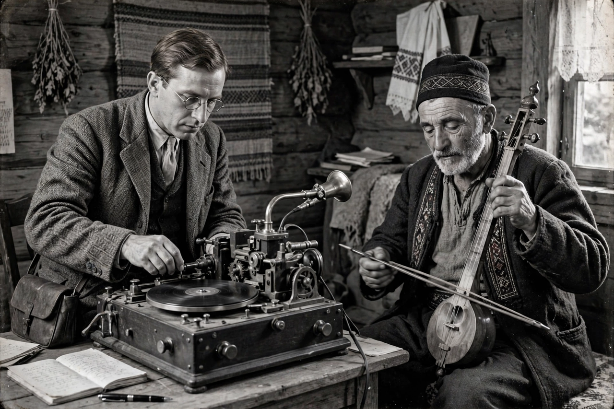

Milman Parry
| Born | 20 June 1902, Oakland, California, U.S. |
|---|---|
| Died | 3 December 1935 (aged 33), Los Angeles, California |
| Alma mater | University of California, Berkeley; Sorbonne |
| Known for | Oral-formulaic theory of Homeric epic |
| Institutions | Harvard University |

Milman Parry (20 June 1902 – 3 December 1935) was an American Classicist whose theories on the origin of the Homeric poems revolutionized the study of oral poetry and epic literature. In his French doctoral theses of 1928, Parry demonstrated that the style of the Iliad and Odyssey is characterized by the extensive use of fixed "formulas" — repeated phrases adapted to the hexameter — and argued that this system could only be the product of a long tradition of oral composition.
Fieldwork in Yugoslavia
To test his theory among a living oral tradition, Parry — by then teaching at Harvard — travelled in 1933–1935 to Yugoslavia with his assistant Albert Lord, recording thousands of South Slavic heroic songs performed by singers (guslari) such as Avdo Međedović, who composed epics of Homeric length in performance. The recordings and texts, made on aluminium discs with a specially built machine, proved that illiterate singers could compose enormous poems without writing, using formulas and typical scenes. The collection is preserved at Harvard as the Milman Parry Collection of Oral Literature.
Death and legacy
Parry died in Los Angeles in December 1935, aged 33, from an accidental gunshot wound while unpacking a suitcase. His work was carried forward by Albert Lord, whose The Singer of Tales (1960) presented the Parry–Lord oral-formulaic theory to a wide audience. The theory transformed scholarship on Homer, on epics such as the Shahnameh, Song of Roland, Nibelungenlied, and Kalevala, and on oral traditions worldwide — though later scholars have debated how strictly "oral" the Homeric texts themselves are.